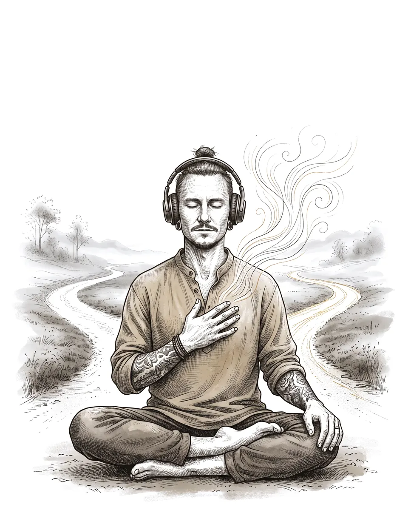
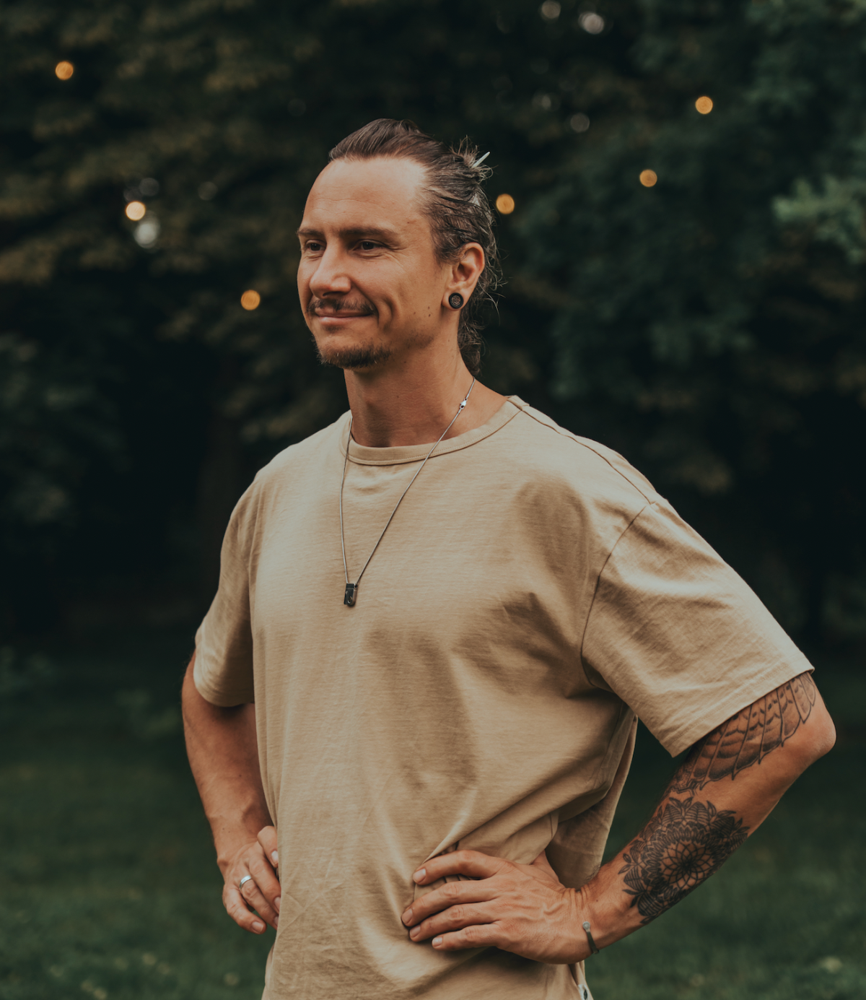

ONLINE INNER WORKSHOP · BREATHWORK UND SOUND · FÜR UNTERNEHMER
Ein Abend für Unternehmer und Selbstständige, die wissen, was sie tun müssten, und es nicht tun. Die nicht länger von Gefühlen gesteuert werden wollen, die sie gar nicht bemerken, und wieder klare Entscheidungen treffen wollen, im Business und privat. Du bringst eine Entscheidung mit und gehst mit deinem nächsten Schritt raus.
Platz sichernDa ist diese eine Entscheidung, die du seit Wochen vor dir herschiebst. Du machst Listen, redest mit Freunden darüber, wägst ab. Und kommst keinen Meter weiter.
Eine Entscheidung fühlt sich selten schwer an, weil sie kompliziert ist. Meistens liegt ein Gefühl drunter, das du nicht fühlen willst. Wut, Schiss, Trauer. Und genau dieses Gefühl entscheidet im Hintergrund mit.
Als Unternehmer hast du gelernt, rational zu bleiben. Also schiebst du das Gefühl weg. Weg ist es damit aber nicht. Es kommt zurück als Aufschieben, als Grübeln, als dieses diffuse Gefühl, dass irgendwas nicht stimmt.
Von außen sieht das aus wie ein Logikproblem. Dahinter steckt ein Gefühl, das sich als Logikproblem tarnt. Und je länger du es ignorierst, desto lauter wird es.
Mehr Nachdenken bringt dich da nicht raus. Das Feststecken zeigt dir die Stelle, an der du nicht weiterfühlen willst.
Ich kenn das von mir. Solange der Laptop offen ist, muss ich meine Wut nicht spüren oder meine Trauer.
An diesem Abend gehen wir da ran. Statt das Gefühl wegzudrücken, hörst du hin, was es dir sagen will. Mit Breathwork und Sound raus aus dem Kopf und rein in den Körper.

01
Feststecken.
Du bringst die Entscheidung mit, die dich gerade blockiert, und schaust, wo du dich im Kreis drehst. Grübeln, Listen, Aufschieben.
02
Das Gefühl finden.
Welches Gefühl willst du nicht fühlen, wenn du dich entscheidest? Das ist dein blinder Fleck.
03
Atmen und Hören.
Mit Breathwork und Sound gehst du rein in dieses Gefühl, statt davor wegzurennen. Und du spürst, welche Option eng wird und welche weit.
04
Klarheit.
Du triffst deine Entscheidung und gehst mit einem konkreten nächsten Schritt raus, mit Tag und Uhrzeit.
Wut, Schiss und Trauer zeigen dir oft genau, worum es wirklich geht. Wenn du sie fühlst, verlieren sie ihre Macht über deine Entscheidung.
„Die Sessions holen mich mehr in den Körper und raus aus dem Kopf."
Jonny, Crypto Investor

Seit acht Jahren begleite ich Unternehmer und Selbstständige mit Breathwork, Sound Healing und Körperarbeit. Ich bin zertifizierter Breathwork Instructor (Oxygen Advantage) und mache selbst seit über zehn Jahren tiefe innere Arbeit.
Hunderte Menschen hab ich durch Retreats, Events und Coachings begleitet, in Gruppen bis zu 50 Leuten und im 1:1. Fast immer ging es am Ende um dasselbe: eine Entscheidung, die schon lange fällig war.
Meine eigene fällige Entscheidung kam 2018: Ich hab meinen Job als Barchef in der Schweiz aufgegeben, ohne Rücklagen, und bin mit dem letzten Geld im Camper losgefahren. Daraus wurden sieben Jahre Weltreise, und von unterwegs hab ich mein Online Business Stück für Stück aufgebaut.
Unterwegs hab ich bei einem Stamm im Amazonas gelebt, zehn Tage im Schweigeretreat gesessen und überall was gelernt, das heute in meiner Arbeit steckt. An diesem Abend geb ich dir davon weiter, was mir selbst am meisten geholfen hat.
Trag dich hier ein. Danach geht es direkt weiter zur Anmeldung bei Luma, dort zahlst du dein Ticket und bekommst den Zoom Link.
Nein. Ich führe dich durch jeden Schritt.
Dann bring das Thema mit, das dich gerade am meisten nervt. Meistens steckt eine Entscheidung dahinter.
Nein. Du arbeitest für dich. Wer teilen will, kann teilen.
Nach der Anmeldung bei Luma bekommst du eine Bestätigung per Mail, darin steht der Link.